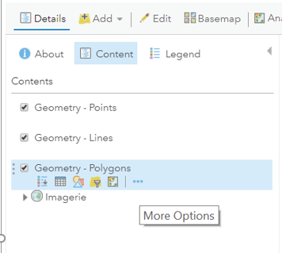
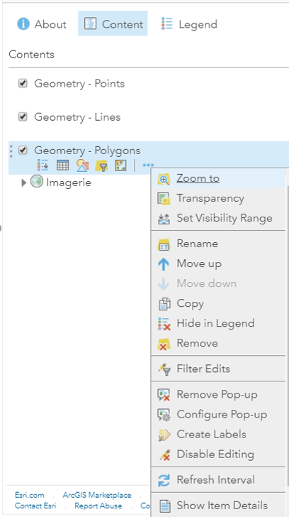
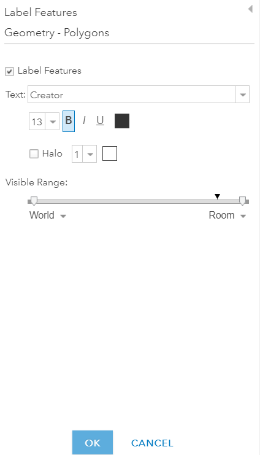
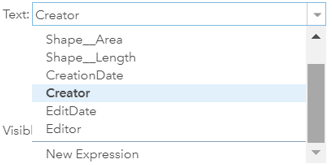
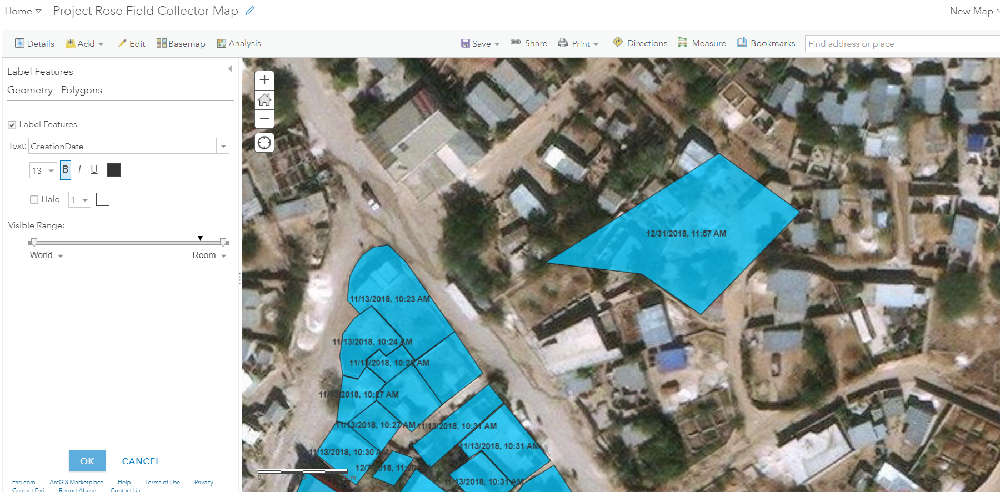
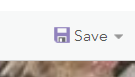
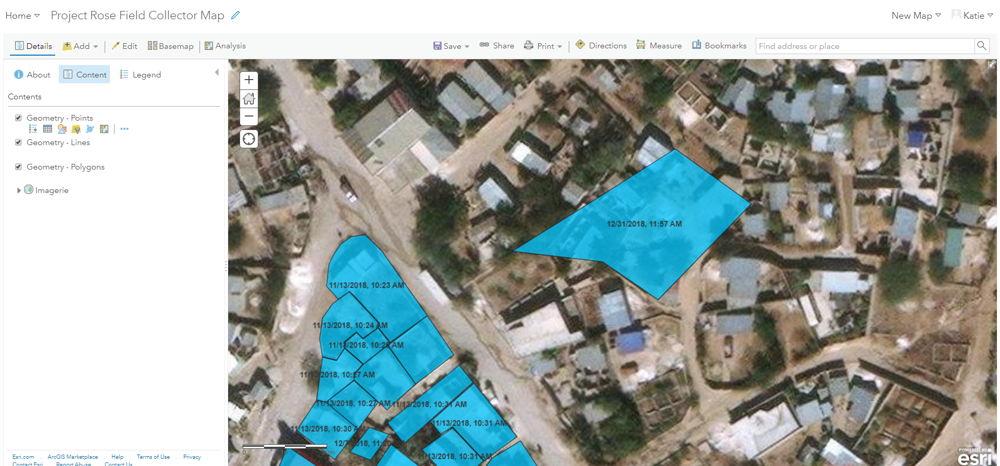

Navigate to map in Map Viewer
Select More Options from the desired layer 
Select Create Labels from More Options 
See the Label Features window

Choose desired label from the Text drop-down
Note: The drop-down options consist of attributes. A new expression can be created and applied. The expression must be written using Arcade expression language. You can read more about Arcade expressions at this link.

In this example, the CreationDate attribute was chosen in the Text drop-down

Press OK once the labels are set
Click Save

See the end result of the labelled polygons
